Pasporty slovenských měst: bez pasportu (nahoře, modře) a s pasportem (dole, červeně)
Řez zleva (A) doprava (B), ±10 m podél ulice, 10 px = 1 m. Silné čáry = okraje vozovky, tenké = ostatní hranice, žlutá = střed řezu, * = odhad. Ortofoto © GKÚ Bratislava, NLC (ZBGIS, CC BY 4.0).
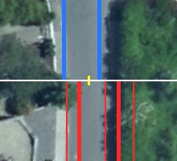
3 · Na Slavíne (bratislava)
bez pasportu: pruh 4.45
s pasportem: chodnik 1.5 · pruh 3.3 · parkovani 1.6 · chodnik 1.85
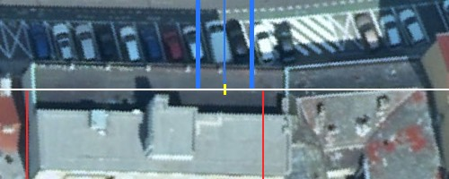
17 · (bez názvu) (bratislava)
bez pasportu: pruh 3* · pruh 3*
s pasportem: chodnik 26.33
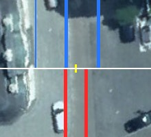
20 · Medená (bratislava)
bez pasportu: chodnik 4.4* · pruh 4.7
s pasportem: pruh 3*
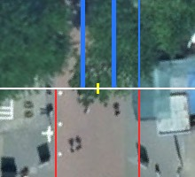
24 · Poštová (bratislava)
bez pasportu: pruh 3.5 · chodnik 2.9*
s pasportem: chodnik_kola 9.35
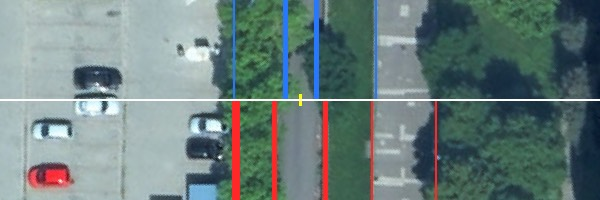
26 · (bez názvu) (dubravka)
bez pasportu: chodnik 5.1* · obsluzna 3.1* · chodnik 6* · zelen 24.65*
s pasportem: parkovani 0.35 · nezname 3.7* · parkovani 5.05 · nezname 4.7* · chodnik 6.4
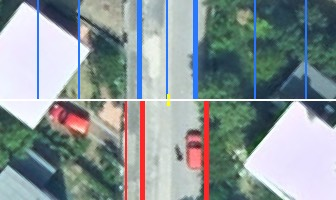
27 · Brižitská (dubravka)
bez pasportu: plocha 4.05* · chodnik 6* · pruh 2.8 · pruh 2.8 · chodnik 6* · zelen 5.1*
s pasportem: chodnik 1.55 · pruh 6.4
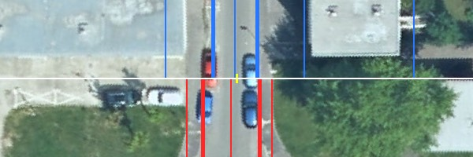
28 · Sekurisova (dubravka)
bez pasportu: zelen 24.8* · chodnik 6* · pruh 2.8 · pruh 2.8 · chodnik 6* · zelen 13.95*
s pasportem: chodnik 2.05 · pruh 3.6 · pruh 3.6 · chodnik 1.6
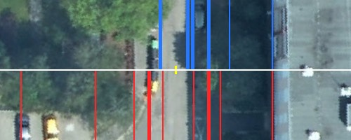
30 · Fedákova (dubravka)
bez pasportu: pruh 3.9 · chodnik 0.7* · parkovani 2.35 · chodnik 2.95* · plocha 6.1*
s pasportem: chodnik 10.58 · nezname 5.5* · chodnik 2.1 · parkovani 2* · pruh 4.37 · parkovani 2.18 · chodnik 1.65 · nezname 7.4*
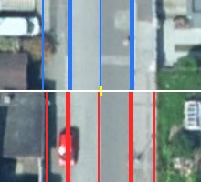
31 · Popovova (dubravka)
bez pasportu: chodnik 2.85* · pruh 3.4 · pruh 3.4
s pasportem: chodnik 2.3 · pruh 3.45 · pruh 3.45 · chodnik 2.6
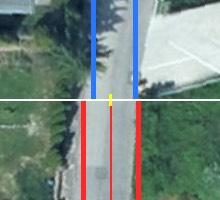
32 · Plachého (dubravka)
bez pasportu: pruh 4.2
s pasportem: pruh 2.77 · pruh 2.77
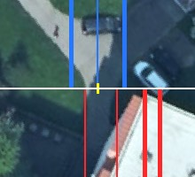
33 · (bez názvu) (dubravka)
bez pasportu: pruh 3* · pruh 3*
s pasportem: chodnik 3.6 · nezname 3.05* · parkovani 1.75
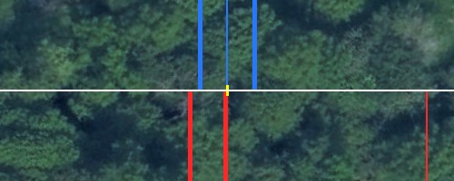
35 · (bez názvu) (dubravka)
bez pasportu: pruh 3* · pruh 3*
s pasportem: pruh 3.9 · nezname 22.18*
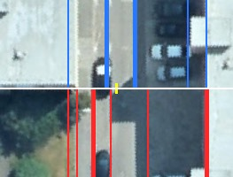
36 · Gallayova (dubravka)
bez pasportu: chodnik 4.35* · pruh 3.2 · chodnik 6* · plocha 2.05*
s pasportem: nezname 1.05* · chodnik 1.8 · parkovani 1.97* · pruh 4.2 · parkovani 6.58
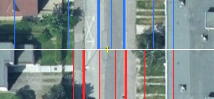
37 · Tranovského (dubravka)
bez pasportu: zelen 10.85* · chodnik 6* · pruh 2.65 · pruh 2.65 · chodnik 6* · zelen 3.95*
s pasportem: chodnik 2 · pruh 3.27 · pruh 3.27 · parkovani 2* · chodnik 3.85 · nezname 5.8*
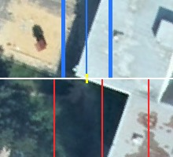
40 · (bez názvu) (dubravka)
bez pasportu: pruh 3* · pruh 3*
s pasportem: chodnik 6.1 · nezname 5.95*
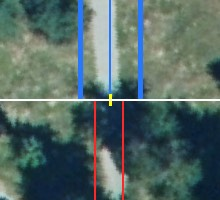
42 · (bez názvu) (presov)
bez pasportu: pruh 3* · pruh 3*
s pasportem: chodnik 2.85
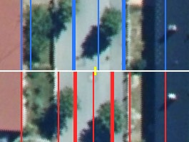
44 · Fučíkova (presov)
bez pasportu: zelen 1.35* · chodnik 6* · pruh 3.45 · pruh 3.45 · chodnik 5.95*
s pasportem: nezname 5.2* · chodnik 2.3 · pruh 2.62 · pruh 2.62 · chodnik 2.5 · nezname 4.95*
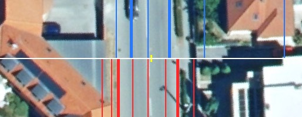
45 · Vajanského (presov)
bez pasportu: chodnik 2.49* · pruh 2.97 · pruh 3.53 · chodnik 6* · zelen 13.6*
s pasportem: zelen 1.65 · nezname 1.05* · parkovani 2.57* · pruh 2.6 · pruh 2.93 · parkovani 2* · chodnik 2.85
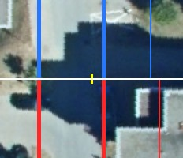
46 · Majakovského (presov)
bez pasportu: pruh 8.2 · chodnik 6.05*
s pasportem: pruh 8.2 · zelen 7.1
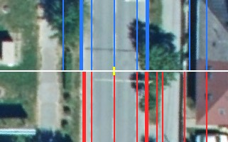
47 · 17. novembra (presov)
bez pasportu: chodnik 2.5* · cyklopruh 1.47 · pruh 3.2 · pruh 3.2 · cyklopruh 1.43 · chodnik 6* · zelen 2.35*
s pasportem: cyklopruh 1.07 · pruh 3.2 · pruh 3.2 · cyklopruh 1.27 · zelen 1.5 · nezname 0.8* · chodnik 3.1 · nezname 3.1*
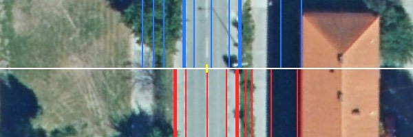
48 · 17. novembra (presov)
bez pasportu: stromorad 25.85* · chodnik 1.65* · stromorad 1.5 · chodnik 2.85* · cyklopruh 1.5 · pruh 2.55 · pruh 2.55 · cyklopruh 1.5 · chodnik 6* · plocha 3.05*
s pasportem: cyklopruh 1.52 · pruh 3.1 · pruh 2.88 · cyklopruh 1.5 · zelen 1.3 · nezname 0.85* · chodnik 2.8 · zelen 3.8 · nezname 0.65*
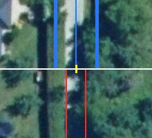
50 · (bez názvu) (presov)
bez pasportu: pruh 3* · pruh 3*
s pasportem: chodnik 2.8
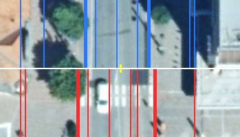
51 · Hlavná (presov)
bez pasportu: plocha 3.45* · chodnik_kola 6* · cyklopruh 1.5 · pruh 3.07 · pruh 3 · cyklopruh 1.63 · chodnik 6* · plocha 0.6*
s pasportem: nezname 0.7* · chodnik 7.65 · cyklopruh 1.5 · pruh 3.1 · pruh 3.1 · cyklopruh 0.97 · parkovani 2.53* · chodnik 5.7
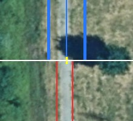
53 · (bez názvu) (presov)
bez pasportu: pruh 3* · pruh 3*
s pasportem: chodnik 2.55
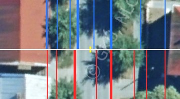
54 · Plzenská (presov)
bez pasportu: plocha 0.3* · chodnik 1.9* · zelen 2.65* · chodnik 1.45* · pruh 3.35 · pruh 3.35 · chodnik 6* · zelen 4.9*
s pasportem: chodnik 1.95 · zelen 3.6 · pruh 4.41 · pruh 2.83 · zelen 4.75 · chodnik 2.45 · nezname 3.7*
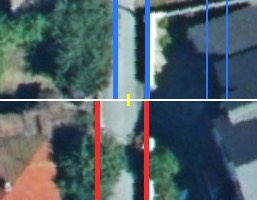
55 · Letná (presov)
bez pasportu: pruh 3.2 · chodnik 6* · plocha 1.95*
s pasportem: pruh 4.9
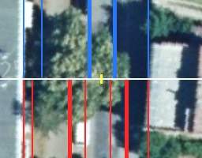
57 · Janka Borodáča (presov)
bez pasportu: plocha 2.3* · chodnik 6* · pruh 3.2 · chodnik 4.25*
s pasportem: nezname 1.1* · chodnik 4.7 · parkovani 2* · pruh 3.2 · parkovani 2* · chodnik 2.75
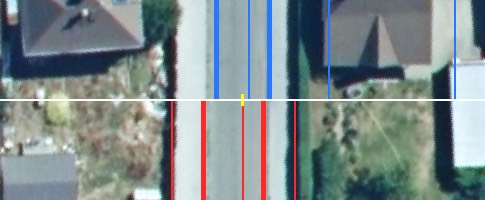
60 · Záborského (presov)
bez pasportu: pruh_piktokoridor 3.3 · parkovani 2* · chodnik 6* · zelen 12.55*
s pasportem: chodnik 3.1 · pruh_piktokoridor 3.95 · parkovani 2* · chodnik 3.25
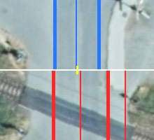
61 · Pavlovičovo námestie (presov)
bez pasportu: pruh 3.15 · pruh 3.15
s pasportem: pruh 3.92 · pruh 3.92 · chodnik 2.5
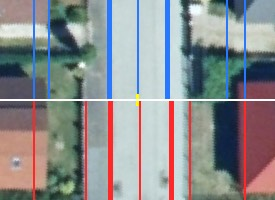
63 · Petőfiho (presov)
bez pasportu: zelen 1.55* · chodnik 6* · pruh 2.9 · pruh 2.9 · chodnik 6* · plocha 1.75*
s pasportem: nezname 5.25* · chodnik 2.35 · pruh 3.05 · pruh 3.05 · chodnik 1.9 · nezname 5.5*
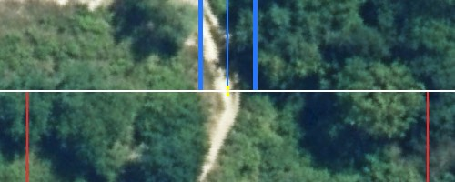
65 · (bez názvu) (presov)
bez pasportu: pruh 3* · pruh 3*
s pasportem: zelen 44
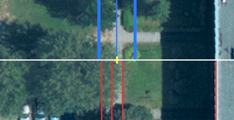
68 · (bez názvu) (zilina)
bez pasportu: pruh 3* · pruh 3*
s pasportem: zelen 1.69* · chodnik 1.8 · zelen 15.45*
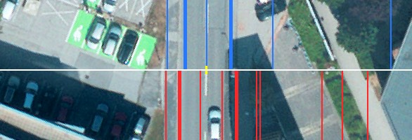
69 · Vojtecha Spanyola (zilina)
bez pasportu: chodnik 2.5* · pruh 3.17 · pruh 3.33 · chodnik 6* · zelen 16.8*
s pasportem: chodnik 1.85 · pruh 3.05 · pruh 3.05 · parkovani 2* · chodnik 2.9 · nezname 0.55* · chodnik 8.8 · nezname 2.9* · chodnik 3.6
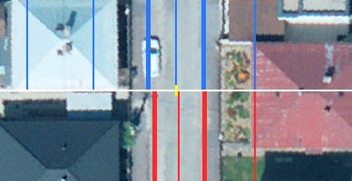
72 · Potočná (zilina)
bez pasportu: plocha 7.3* · chodnik 6* · pruh 3.05 · pruh 3.05 · chodnik 5.65*
s pasportem: pruh 2.77 · pruh 2.77 · nezname 5.55*
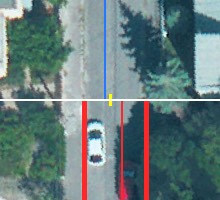
73 · Na Šefranici (zilina)
bez pasportu:
s pasportem: pruh 3.77 · parkovani 2.43*
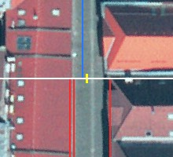
77 · Hodžova (zilina)
bez pasportu:
s pasportem: nezname 0.5* · plocha 4.55
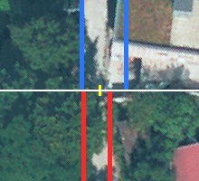
79 · Horná (zilina)
bez pasportu: pruh 4.9
s pasportem: pruh 2.9
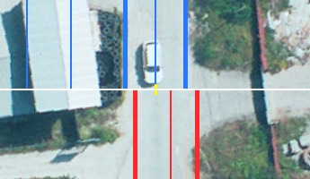
80 · Cestárska (zilina)
bez pasportu: plocha 4.95* · chodnik 6* · pruh 3.35 · pruh 3.35
s pasportem: pruh 3.98 · pruh 2.86
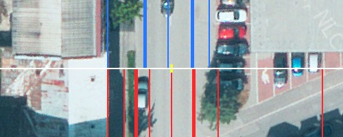
84 · Framborská (zilina)
bez pasportu: chodnik 5.35* · pruh 3.45 · pruh 3.45 · chodnik 2.5*
s pasportem: chodnik 2.35 · nezname 1.7* · parkovani 2 · pruh 3.22 · pruh 3.22 · chodnik 3.55 · plocha 15.22
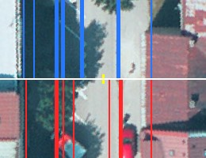
87 · Hollého (zilina)
bez pasportu: plocha 1.3* · chodnik 2.8* · parkovani 0.85 · chodnik 2.35* · pruh 4.6 · chodnik 4.25*
s pasportem: chodnik 3.85 · parkovani 0.85 · krajnice 1.35* · pruh 4.5 · krajnice 1.35* · chodnik 3.9
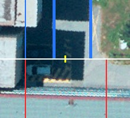
90 · (bez názvu) (zilina)
bez pasportu: chodnik 4.75* · obsluzna 6.2*
s pasportem: plocha 13.65
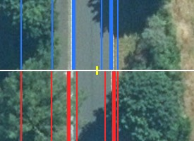
94 · (bez názvu) (bystrica)
bez pasportu: zelen 4.37* · nezname 3.05* · pruh 4 · krajnice 1.3* · nezname 0.95*
s pasportem: zelen 4.32* · chodnik 2.4 · krajnice 1.17* · pruh 4 · krajnice 1.17* · nezname 0.6*
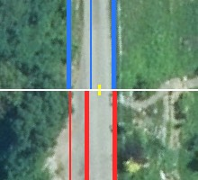
95 · Pod Urpínom (bystrica)
bez pasportu: pruh 2.5 · pruh 2.5
s pasportem: nezname 1.75* · pruh 3.15
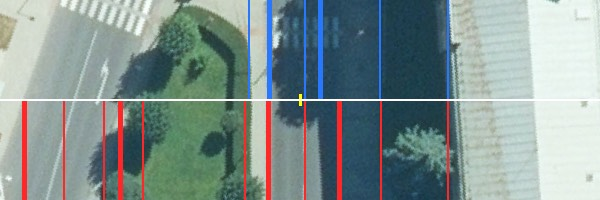
96 · Československej armády (bystrica)
bez pasportu: zelen 25.9* · chodnik 2* · pruh 3.67 · krajnice 1.43 · chodnik 6* · zelen 6.8*
s pasportem: chodnik 3.4 · pruh 4 · pruh 4 · krajnice 1.65* · chodnik 2.25 · zelen 10.2* · chodnik 2.3 · pruh 3.77 · pruh 3.33 · chodnik 4.2 · nezname 6.7*
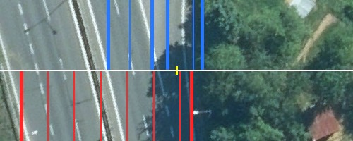
98 · (bez názvu) (bystrica)
bez pasportu: pruh 3.1 · pruh 3.1 · delici 2.2* · pruh 3.75 · krajnice 1.15*
s pasportem: pruh 3.75 · pruh 3.75 · pruh 3.75 · pruh 3.75 · pruh 3.75 · pruh 3.75 · krajnice 1.58*
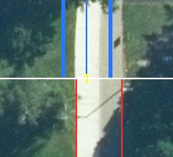
101 · (bez názvu) (bystrica)
bez pasportu: pruh 3* · pruh 3*
s pasportem: chodnik 5.75
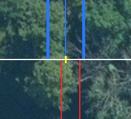
102 · (bez názvu) (bystrica)
bez pasportu: pruh 3* · pruh 3*
s pasportem: chodnik 3.1
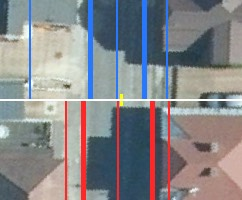
106 · Rudlovská cesta (bystrica)
bez pasportu: chodnik 6* · pruh 2.7 · pruh 2.7 · chodnik 2.3*
s pasportem: chodnik 1.7 · pruh 3.47 · pruh 3.47 · chodnik 1.6
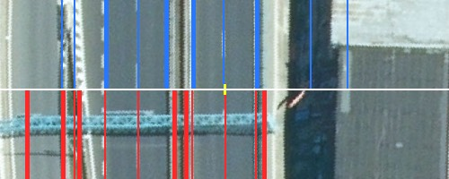
107 · R1 (bystrica)
bez pasportu: zelen 1.4* · nezname 3.45* · pruh 3.57 · pruh 3.13 · delici 3* · pruh 3.47 · pruh 3.5 · krajnice 0.13 · chodnik 6* · plocha 4.1*
s pasportem: pruh 4.03 · zelen 1.3* · nezname 0.45* · pruh 2.88 · pruh 3.7 · pruh 4.08 · nezname 1.25* · krajnice 0.67 · pruh 3.7 · pruh 3.4 · krajnice 0.98
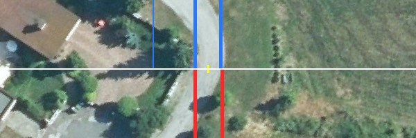
109 · (bez názvu) (bystrica)
bez pasportu: zelen 26* · chodnik 6* · obsluzna 3.7*
s pasportem: obsluzna 3.9
112 · R1 (bystrica)
bez pasportu: nezname 6.25* · pruh 3.43 · pruh 3.43 · pruh 3.43 · delici 1.2* · pruh 3.06 · pruh 4.6 · pruh 3.83
s pasportem: nezname 4* · krajnice 5.3* · pruh 3.75 · pruh 3.75 · pruh 3.75 · pruh 3.75 · pruh 3.75 · pruh 3.75 · krajnice 5.3* · nezname 6.3*
113 · (bez názvu) (bystrica)
bez pasportu: pruh 3* · pruh 3*
s pasportem: chodnik 4.65 · nezname 0.45*
114 · Muškátová (bystrica)
bez pasportu: pruh 3.6 · pruh 3.6 · nezname 2.4*
s pasportem: pruh 3.45 · pruh 3.45 · parkovani 2* · nezname 0.7*